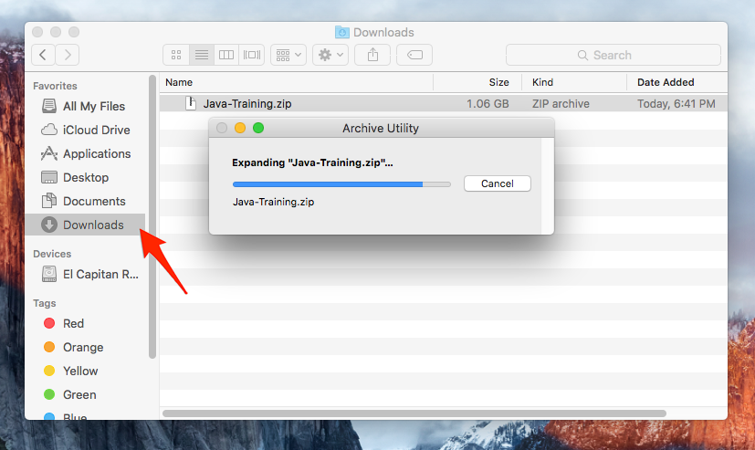
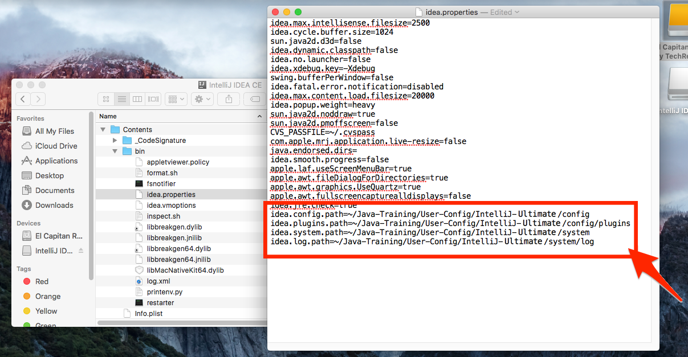

Instalační pokyny pro macOS
Tyto pokyny jsou výhradně pro Mac. Instalaci pro Windows lze najít najdete ZDE. Linux není podporován. Pokud máte Linux, prosím, ozvěte se lektorovi.
Na akci budete potřebovat Javu (JDK), programátorský editor IntelliJ IDEA (Ultimate Edition), nástroj pro překlad javových projektů Maven a webový server Tomcat.
Pro jejich instalaci následujte postup níže.
Tyto instrukce následujte i pokud už máte nějaké programy v DOMOVSKÁ_SLOŽKA/Java-Training z minula. Žádný strach, původní projekty si tím nepřepíšete. Ty máte v DOMOVSKÁ_SLOŽKA/Java-Training\Projects a tato složka se nemaže. Pokud chcete, můžete si složku DOMOVSKÁ_SLOŽKA/Java-Training/Projects před touto instalací zazálohovat do jiné složky (např. Dokumenty), ale není to nutné. Ostatní složky v DOMOVSKÁ_SLOŽKA/Java-Training buď zůstanou nedotčeny nebo budou přepsány novější verzí programů, což je v pořádku.
Pokud by kterýkoliv program, který si stáhnete v archívu Java-Training.7z, nabízel update, prosím odmítněte to. Programy jsou přesně vybrané, aby spolu fungovaly. Jsou také speciálně nastavené a navzájem se na sebe odkazují, není proto možné ani nahradit, ani updatovat žádný z těchto programů. Pokud by to byl zásadní problém, kontektujte prosím lektora.
Na některých obrázcích můžete ve složkách vidět méně nebo mírně jinak pojmenované soubory. To by nemělo být na závadu.
-
Kompletní přednastavený archív si můžete stáhnout z tohoto odkazu:
Java-Training.zip
Na odkaz klikněte, soubor se začne stahovat do složky Stahování (Downloads). Průběh lze sledovat například v horním tlačítku Stahování (Downloads). -
Až bude soubor stažený, automaticky se rozbalí.
Podívejte se do složky Stahování (Downloads).
Pokud byste ve složce Stahování (Downloads) viděli
pouze archív
Java-Training.zip, dvojím kliknutím jej rozbalte.

-
Přesuňte složku
Java-Trainingdo své domovské složky. Domovská složka je/Users/VAŠE_UŽIVATELSKÉ_JMÉNO. Tedy například/Users/student. Do domovské složky se lze dostat ve Finderu volbou z menuJdi -> Domov(Go -> Home).
Pokud budete přesouvat složku Java-Training a už v domovské složce Java-Training budete mít z minula, počítač se vás bude ptát, zda chcete přepsat původní složku Java-Training. Zvolte buď sloučit (pokud to váš program umožňuje) nebo z původní složky zazálohujte Projects a ostatní už můžete nechat nahradit novými soubory. -
Přesun ze Stahování (Downloads) do domovské složky.
-
Celý obsah tak bude ve složce
/Users/VAŠE_UŽIVATELSKÉ_JMÉNO/Java-Traininga bude vypadat takto:
Je nezbytně nutné mít vše právě v /Users/VAŠE_UŽIVATELSKÉ_JMÉNO/Java-Training. V jiné složce (například na ploše nebo ve vaší složce Dokumenty) aplikace nebudou fungovat.
-
Ve složce
Java-Traininguvnitř své domovské složky dvojitým kliknutím spusťte instalační souborideaIU-2016.3.7.1.dmga přetažením nainstalujte IntelliJ IDEA do složky Aplikace (Applications).
Konfigurace IntelliJ IDEA
-
Ze složky Aplikace (Applications) poklepáním spusťte editor IntelliJ IDEA - Ultimate - Java-Training.
-
Potvrďte, že si tuto aplikaci skutečně přejete spustit.

-
Všechna další okna a dialogy zavřete červeným tlačítkem v levém horním rohu.


-
Ve složce Aplikace (Applications) pravým tlačítkem klikněte na IntelliJ IDEA - Ultimate - Java-Training a vyberte
Zobrazit obsah (Show Package Contents).
Poznámka: IntelliJ IDEA bylo nutné nejprve spustit (a zase ukončit) a až potom zobrazit obsah, protože macOS při prvním spuštění zkontroluje digitální podpis aplikace. Při dalších spuštěních již ne, a proto nyní můžeme přistoupit ke změně nastavení (viz další kroky).
-
Nyní se proklikejte do složky
Contents/bin, klikněte pravým tlačítkem na souboridea.propertiesa vyberte Otevřít pomocí (Open With). Otevřete ho pomocí textového editoru (TextEdit nebo TextMate).
-
Zvolte aplikaci TextEdit nebo TextMate.
-
Na konec souboru idea.properties přidejte následující řádky:
idea.config.path=~/Java-Training/User-Config/IntelliJ-Ultimate/config
idea.plugins.path=~/Java-Training/User-Config/IntelliJ-Ultimate/config/plugins
idea.system.path=~/Java-Training/User-Config/IntelliJ-Ultimate/system
idea.log.path=~/Java-Training/User-Config/IntelliJ-Ultimate/system/log

-
Uložte změny v konfiguračním souboru.
- A to je vše.
Ukázková aplikace
Zkuste si ještě pustit ukázkovou aplikaci, ať ověříte, že máte správně nainstalovanáno.
-
Ze složky Aplikace (Applications) poklepáním spusťte editor
IntelliJ IDEA - Ultimate - Java-Training.
Při prvním úplném spuštění po vás bude IntelliJ IDEA vyžadovat licenční kód.
Ten získáte v eshopu JetBrains podle instrukcí v emailu od Czechitas.
-
IntelliJ IDEA po vás bude chtít licenci.
Tu je nutné si koupit na eshopu JetBrains
(Individual Customers -> New Subscription -> IntelliJ IDEA Ultimate)
https://www.jetbrains.com/idea/buy/#edition=personal
V eshopu je nutné před odesláním objednávky zadat slevový kód (co jste dostaly v emailu), který sníží cenu na 0,- korun. Rozhodně neschvalujte žádnou platbu ani není třeba zadávat platební kartu. -
Po provedení nákupu si v eshopu vyzvedněte offline activation code.
-
Použijte ho v IntelliJ IDEA.
-
Zvolte Otevřít (Open)
-
Ukázkovou aplikaci najdete v domovské složce v podsložce
Java-Training/Projects/DemoApplication.
Pozor! v závislosti na nastavení vašeho systému může okno výběru složky vypadat jinak.
Až najdete složkuDemoApplication, potvrďte tlačítkem Otevřít (Open).
-
Otevřením prvního projektu začne IntelliJ IDEA indexovat celou Javu,
která je součástí balíku Java-Training (složka JDK).
Vydržte, dokud nezmizí ukazatel průběhu. Může to trvat i pár minut.
Následně se obarví spouštecí šipka do zelena.
-
Zvolte vpravo nahoře zelenou šipku Run
-
Měli byste vidět tuto malinkou aplikaci
Pokud se někde něco nepovede, nezoufejte. Na akci vám pomůžeme.